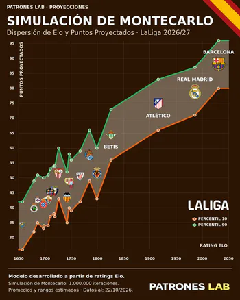
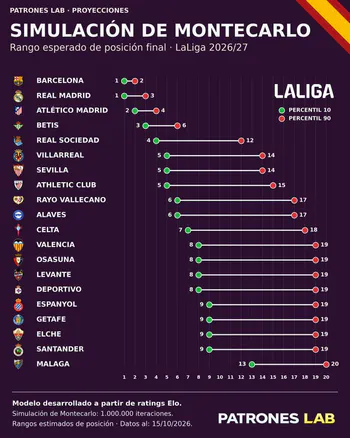
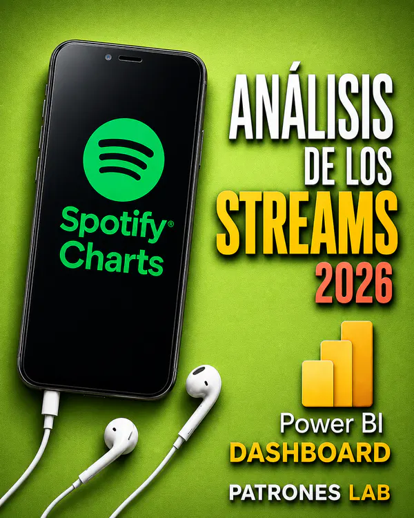
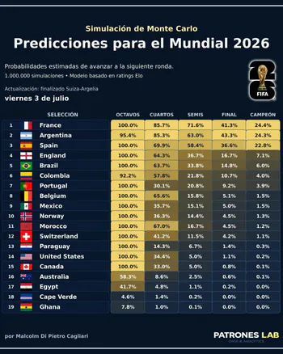

2026/27 챔피언스리그 · 예상 승점
푸아송 모델과 몬테카를로 시뮬레이션으로 리그 페이즈 종료 시 승점을 예측하고 중앙값 및 25~75·5~95백분위 구간을 표시합니다.
게시물 보기 ↗푸아송 모델과 몬테카를로 시뮬레이션으로 리그 페이즈 종료 시 승점을 예측하고 중앙값 및 25~75·5~95백분위 구간을 표시합니다.
게시물 보기 ↗
3차전까지 푸아송 모델과 몬테카를로 시뮬레이션 100만 회로 전망한 최종 순위의 변화
게시물 보기 ↗
몬테카를로 시뮬레이션 100만 회로 예측한 라리가 팀별 최종 순위 열지도
게시물 보기 ↗
푸아송과 몬테카를로 시뮬레이션으로 챔피언스리그 상위 8위, 플레이오프 진출 및 탈락 확률을 추정합니다.
게시물 보기 ↗
팀별 Elo 레이팅, 예상 승점, 모의 결과 범위 비교
게시물 보기 ↗
대회에서 가장 자주 나오는 승점을 살펴보기 위한 모의 승점 히스토그램
게시물 보기 ↗
최종 순위의 백분위를 비교해 가능성이 높은 결과 범위를 보여 줍니다.
게시물 보기 ↗
푸아송 모델과 몬테카를로 시뮬레이션으로 경기 결과와 진출 가능성을 추정하는 방법 소개
게시물 보기 ↗
시뮬레이션에 관한 LinkedIn 게시물입니다. 세부 내용은 확인 중입니다.
게시물 보기 ↗
대회 라운드별 대표팀 예상 순위의 변화
게시물 보기 ↗
푸아송 득점 모델과 몬테카를로 시뮬레이션으로 챔피언스리그 결과를 예측합니다.
개발 중인 프로젝트 보기 ↗
네이션스리그 대표팀별 Elo 레이팅과 추정 우승 확률 비교
게시물 보기 ↗
조별 리그부터 결승까지 대회의 각 단계에 진출할 확률
게시물 보기 ↗
UEFA 네이션스리그의 확률을 분석하는 시뮬레이션 모델 소개
게시물 보기 ↗
AENA 공개 데이터로 발레아레스 제도의 항공 교통을 분석합니다.
게시물 보기 ↗
조 1위와 토너먼트 승리, 우승 확률 시뮬레이션
프로젝트 보기 ↗
새 경기 결과와 Elo 레이팅을 반영한 최종 순위 확률
게시물 보기 ↗
2026/27 라리가 시뮬레이션 관련 게시물입니다. 세부 내용은 확인 중입니다.
게시물 보기 ↗
라리가 최종 순위와 결과 확률을 추정하는 시나리오 시뮬레이션
개발 중인 프로젝트 보기 ↗
2026/27 라리가 시나리오 관련 게시물입니다. 세부 내용은 확인 중입니다.
게시물 보기 ↗
DBSCAN으로 거래 데이터의 군집과 이상 거래를 찾습니다.
게시물 보기 ↗
시카고 택시 운행 자료로 시간, 지역, 비용과 관련된 패턴을 찾습니다.
게시물 보기 ↗
거래와 사기 징후를 분석하는 분류 모델
게시물 보기 ↗
Patrones Lab과 데이터 분석, 모델, 시각화 프로젝트 소개
게시물 보기 ↗
분류 기법을 비교해 기상 현상의 경제적 피해를 분석하는 모델
개발 중인 프로젝트 보기 ↗
공급업체 지출의 추이와 범주별·지역별 분포를 살펴보는 대시보드
프로젝트 보기 ↗
Spotify 차트의 재생 수, 순위 변화와 국가별 분포를 살펴보는 대시보드
개발 중인 프로젝트 보기 ↗
월드컵 우승 확률과 가능한 결승 대진 업데이트
게시물 보기 ↗
월드컵 8강 대진과 다음 라운드 진출 확률 시뮬레이션
게시물 보기 ↗
월드컵 준결승 진출, 결승 진출과 우승 확률 추정
게시물 보기 ↗
32강 종료 후 갱신한 다음 라운드 진출 확률과 우승 확률
게시물 보기 ↗
당시 확보한 결과로 예측한 라운드별 진출 확률
게시물 보기 ↗
대표팀별 다음 라운드 진출 및 우승 확률을 추정하는 시뮬레이션 모델
프로젝트 보기 ↗
포지션별 백분위와 90분당 지표로 아르헨티나 선수들을 비교합니다.
게시물 보기 ↗
백분위 레이더 차트로 살펴본 카타르 월드컵 선수별 경기력
프로젝트 보기 ↗
아르헨티나와 프랑스의 결승전에서 공을 가진 선수의 플레이가 위협도를 어떻게 바꾸었는지 분석합니다.
게시물 보기 ↗2022 카타르 월드컵 아르헨티나와 프랑스의 경기를 통해 축구와 확률을 살펴보는 글
글 읽기 ↗
카타르 월드컵에서 각 슛의 득점 확률을 추정하는 모델
프로젝트 보기 ↗2022 카타르 월드컵에서 공을 가진 선수들의 플레이가 만들어 낸 위협을 분석합니다.
프로젝트 보기 ↗
시카고시에 신고된 택시 운행의 수요와 경로를 탐색하는 대화형 대시보드
게시물 보기 ↗
공개 데이터로 만든 시카고 지역별 택시 운행 집중도 지도
게시물 보기 ↗
시카고 택시의 승하차 지역, 운행 경로와 공간적 집중도를 분석합니다.
게시물 보기 ↗신고된 운행의 주요 활동 지역과 승하차 흐름을 표시한 지도
프로젝트 보기 ↗시카고 택시의 운행 현황, 요금, 경로를 살펴보는 대화형 대시보드
프로젝트 보기 ↗요일, 시간대, 거리, 요금별로 신고된 택시 운행이 어떻게 달라지는지 분석합니다.
게시물 보기 ↗공개 데이터로 살펴본 시카고 택시의 도시 운행망에 관한 글
글 읽기 ↗시카고시에 신고된 택시 운행의 수요와 경로, 요금을 분석합니다.
프로젝트 보기 ↗
위치와 도심까지의 거리, 동네 특성에 따른 가격을 분석합니다.
프로젝트 보기 ↗
각 객실 유형에서 상대적으로 비싸거나 저렴한 숙소를 구분하는 모델
프로젝트 보기 ↗
런던 에어비앤비 숙소의 가격과 공간 분포 비교
게시물 보기 ↗런던 에어비앤비 숙소 가격과 공간 분포에 관한 글
글 읽기 ↗런던의 가격, 숙소 유형, 예약 가능 일수와 지역별 차이를 살펴봅니다.
프로젝트 보기 ↗발레아레스 제도 공항의 여객 수와 노선 연결망, 계절성을 분석합니다.
게시물 보기 ↗AENA 공개 데이터로 살펴본 발레아레스 제도의 관광에 관한 글
글 읽기 ↗AENA 공개 데이터로 마요르카, 이비사, 메노르카의 항공 교통을 분석합니다.
프로젝트 보기 ↗밀도 기반 군집화로 이상 거래와 사기 가능성이 있는 패턴을 찾습니다.
프로젝트 보기 ↗지도 학습으로 거래를 분류해 사기 위험을 추정하고 주요 징후를 해석합니다.
프로젝트 보기 ↗
K-평균으로 거래를 군집화해 사기와 관련된 비정상 행태를 탐색합니다.
프로젝트 보기 ↗